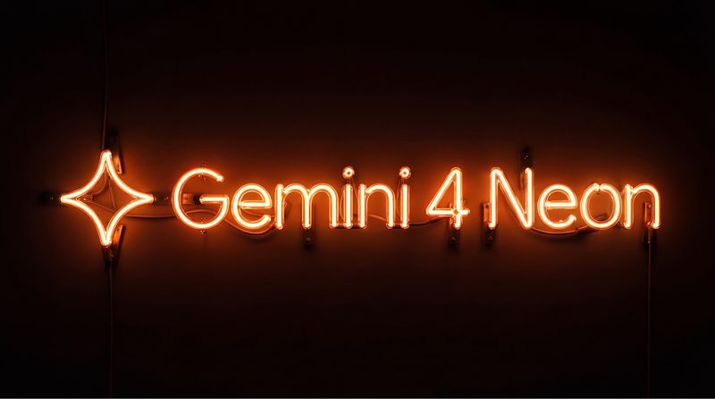
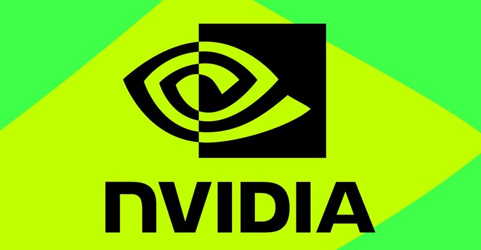
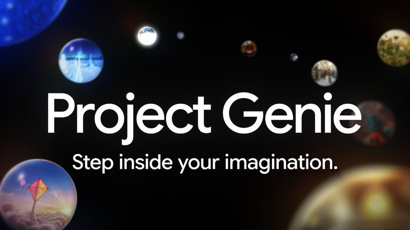
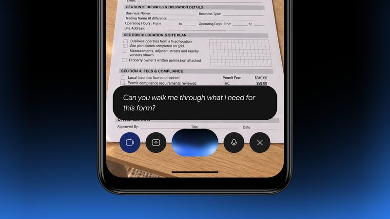
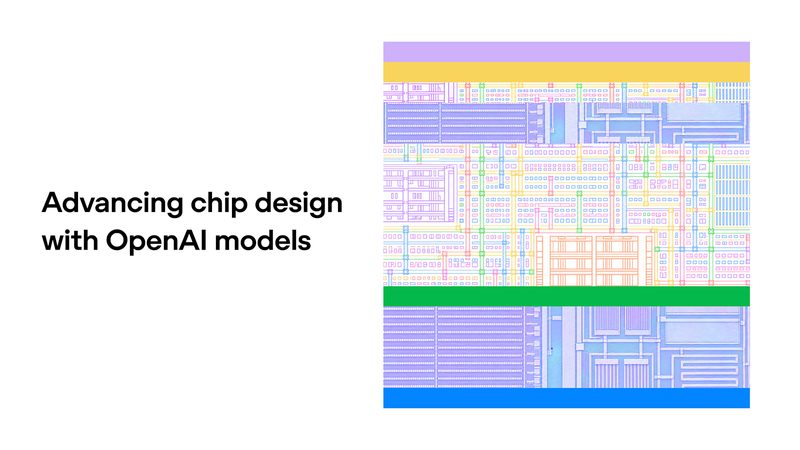
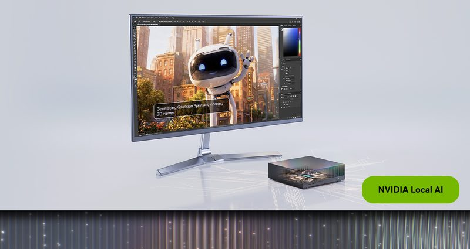

今日頭條
Google 推出 Gemini 4 Neon
PLUS：Nvidia 停止出貨 H200 到中國
本期重點：Google 推出主打速度與準確度的 Gemini 4 Neon，Pro 與 Ultra 訂閱用戶可在 Gemini App 使用；Nvidia 代理執行長在財報會議上表示已停止出貨 H200 到中國。另有 Genie 4 開放生成可互動的虛擬世界、Gemini App 支援低記憶體 Android 手機、Suno 推出音樂影片功能、OpenAI 公布模型協助設計晶片的成果，以及 Nvidia RTX Spark 小型桌機開賣。

圖：Google新上線#1Google 推出 Gemini 4 Neon，Pro 與 Ultra 用戶先用
Google 於 11 月 18 日（美國時間）推出 Gemini 4 Neon，主打快速完成程式、文書與科學類的多步驟任務，在 Artificial Analysis 智慧指數以 61 分排第 3。Gemini App 的 Pro 與 Ultra 訂閱用戶開始可以使用，API 價格為每百萬 tokens 輸入 3 美元、輸出 15 美元，可一次讀入 100 萬 tokens 的資料。
💡 跟你有什麼關係：官方表示 Neon 在內部測試中的捏造率是歷來最低，處理試算表、PDF、圖表這類工作時比較不會亂編；付費用戶可以在 Gemini App 的模型選單切換試用。
⚠️ 跑分多為 Google 自選的評測；公告未提免費版用戶何時能用。
📰 原始來源：Google（2026-11-19） ↗
圖：The Verge新聞#2Nvidia 停止出貨 H200 晶片到中國
Nvidia 代理執行長 Colette Kress 在 11 月 17 日（美國時間）的財報電話會議上表示，公司已不再出貨取得許可的 Hopper 資料中心產品到中國，財測也沒有把這類產品算進去。Nvidia 先前在前執行長黃仁勳任內爭取到美方許可，可對中國出售 H200。
💡 跟你有什麼關係：這代表美中 AI 晶片貿易又少了一條管道，中國業者會更依賴自家晶片；對台灣供應鏈而言，Nvidia 的中國營收占比和出口管制走向都值得持續留意。
⚠️ Kress 沒有說明停止出貨的原因，也沒說明未來是否還會與中國有其他業務往來。此為媒體報導財報會議內容，Nvidia 新聞稿未提這段。
📰 原始來源：The Verge（2026-11-18） ↗
圖：Google新上線#3Genie 4 開放 Ultra 用戶，打字就能改虛擬世界
Google DeepMind 於 11 月 18 日（美國時間）開始讓符合資格的 Google AI Ultra 訂閱用戶使用 Genie 4，可以生成能走動探索的互動世界，並用文字即時改天氣、加角色，還有配合畫面的音效。新版 Project Genie 也加入對話式建構助手與社群作品集，可以分享和改作別人的世界。
💡 跟你有什麼關係：以前要做一個可互動的 3D 場景需要遊戲引擎和美術技能，現在用一句話就能做出雛形，對做教材、簡報展示或單純想玩的人都更容易上手。
⚠️ 目前限 Ultra 方案，Pro 用戶只能登記候補；仍是實驗性研究原型。
📰 原始來源：Google（2026-11-19） ↗
圖：Google新上線#4Gemini App 支援低記憶體 Android 手機
Google 於 11 月 18 日（美國時間）宣布，Gemini App 開始支援符合資格的 Android（Go edition）低記憶體手機，官方表示重新設計了 App，讓核心功能在記憶體較少的機型也能順暢執行。用戶可以用 45 種以上語言的 Gemini Live 對話、拍照翻譯筆記或表單，也能用 Nano Banana 做圖。
💡 跟你有什麼關係：入門款手機過去多半只能用基本語音指令，這次之後，預算有限或給長輩、孩子用的手機也能用上 AI 助理。
⚠️ 限符合資格的 Go edition 機型；公告未列出台灣是否有支援機型。
📰 原始來源：Google（2026-11-19） ↗資訊圖卡（總幕僚長製圖，非新聞照片）工具#5Suno 推出 Visuals，幫 AI 歌曲做影片和封面
AI 音樂平台 Suno 於 11 月 17 日（美國時間）推出 Visuals 功能，可以把歌曲中最多 15 秒的片段做成會對嘴的影片，也能用文字描述生成專輯封面與縮圖，網頁、iOS 與 Android 都能用。Suno 表示加入文字與影像過濾，阻擋生成特定歌手、公眾人物與有版權角色的樣貌。
💡 跟你有什麼關係：想把自己做的歌放上短影音平台的人，不用另外找影片工具就能做出配樂影片；但要注意影片用的是另外計算的 Visuals 點數。
⚠️ Visuals 點數和做歌點數分開，可能要額外付費；據 The Verge 報導，背後模型以 MiniMax 的 H3 為基礎。
📰 原始來源：Suno（2026-11-17） ↗
圖：OpenAI研究#6OpenAI：模型協助設計晶片，AMD 已採用部分改良
OpenAI 於 11 月 18 日公布，用自家模型協助設計第一款自研推論晶片 Jalapeño，估計讓向量單元與矩陣單元的標準元件面積分別減少約 13% 與 10%。與 AMD 合作時，模型改寫電路描述程式碼，在旗艦 GPU 設計上最多改善 14%，AMD 已把部分改動放進近期送去製造的設計。
💡 跟你有什麼關係：晶片設計是 AI 產業的上游，如果 AI 能讓晶片更省面積、更省電，未來 AI 服務的成本可能跟著下降；這也是台灣半導體業會關注的新工具。
⚠️ 數字為 OpenAI 自行公布；AMD 改良幅度是相對其最佳化基準的結果。
📰 原始來源：OpenAI（2026-11-18） ↗
圖：NVIDIA新上線#7Nvidia RTX Spark 小型桌機開賣，主打本機跑 AI
Nvidia 於 11 月 18 日宣布，ASUS、Dell、MSI 的 RTX Spark 小型桌機開始販售，Acer、GIGABYTE、HP 與 Microsoft 的機型隨後推出。這類桌機搭載 20 核心 Grace CPU、Blackwell RTX GPU 與最高 128GB 統一記憶體，官方表示可在本機執行 1,200 億參數的語言模型。
💡 跟你有什麼關係：把 AI 模型放在自己電腦上跑，檔案不用上傳雲端，也不用按用量付 API 費，適合重視隱私或常用 AI 做圖、剪片的人。
⚠️ 公告未列售價；可在本機執行的是有支援的模型。
📰 原始來源：NVIDIA（2026-11-18） ↗✅ 2026/11/19（四） 可以做：如果你家長輩用的是入門款 Android 手機，可以到 Google Play 看看能不能安裝 Gemini App，教他們用語音問問題或拍照翻譯。
🗂️ 過去 14 天